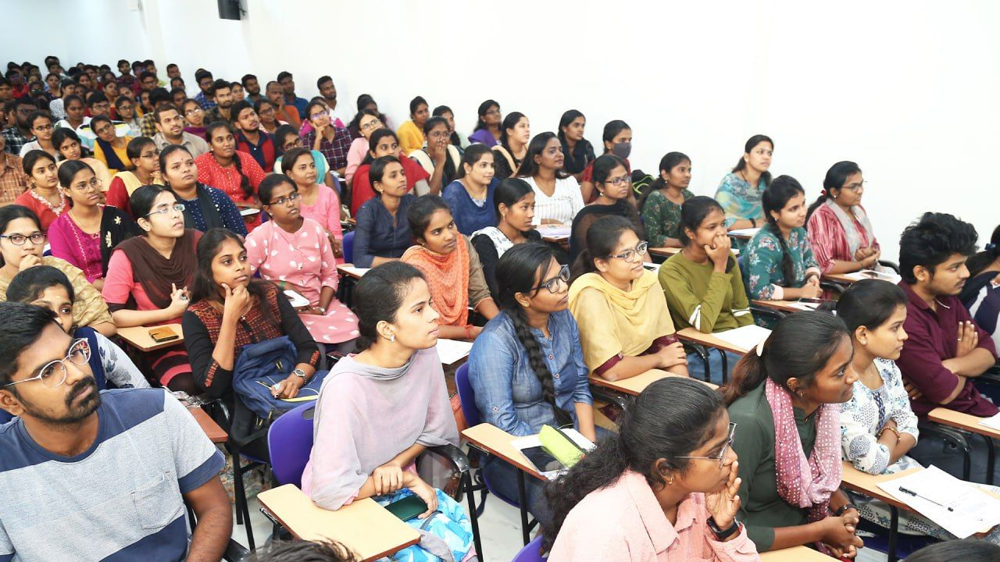
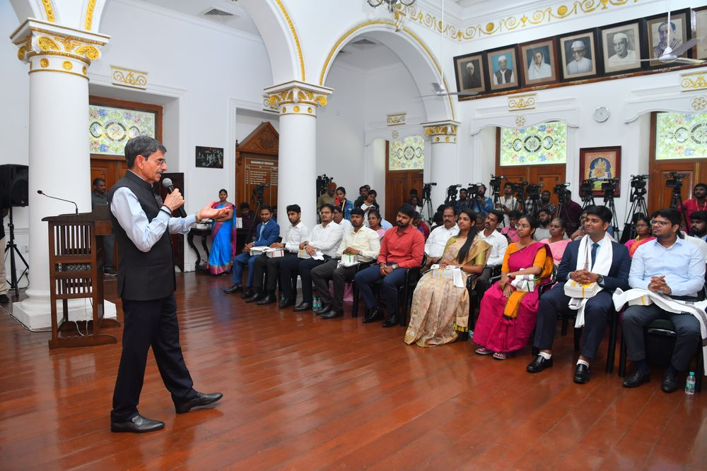

ARAM IAS
Building serious UPSC preparation around academics, writing, evaluation, mentorship and intelligent performance diagnosis.


Published Materials
Use real ARAM publications and in-house magazines as a proof layer across the site: books for foundation credibility, magazines for Post Foundation writing and current-affairs support.


Results
A public-facing proof layer for selections, experience videos, recognitions and student voices.
Use the public site to reinforce trust: official centre details, fraud-warning language, recognitions, topper results, course names and publication imagery should appear as real evidence, not decorative filler.
The Problem
"Foundation is over, but I still can't write good answers. I know the material — my marks just aren't improving."
"I know content but my marks aren't improving."
"Nobody evaluates me properly."
"Current affairs isn't translating into answers."
"I have too many notes."
"I don't know what is actually wrong."
That is the problem Post Foundation is built to solve.
Build the base the right way. Clear concepts, structured notes, regular tests and a path that leads to performance.
Live + recorded
Weekly practice
Diagnose what's holding your marks back. Rewrite answers, fix weak areas and convert preparation into interview calls.
Score: 4.2/10
Score: 7.8/10
The ARAM Method
Find the real weakness before adding more study.
Strengthen only what is currently required.
Translate knowledge into exam-ready answers.
Identify the pattern behind lost marks.
Correct weakness while the first attempt is visible.
Measure whether the intervention worked.
Post Foundation
ARAM AI
ARAM AI should feel like a study launchpad, not a chatbot: exam mode, next action, topic workspace, revision and mentor-approved academic support.
AI detects recurring patterns across answers and tests.
Recommendations adjust based on diagnosed weaknesses.
Every AI insight is reviewed and acted on by a mentor.
“ARAM changed how I saw preparation. I stopped collecting notes and started fixing what was actually losing me marks.”
Cleared UPSC Mains 2025, currently under interview training
ARAM IAS Student
Read the story →Proof
Real outcomes from students who moved from preparation to performance with ARAM.
See selections →Before-and-after answers showing the measurable lift from diagnosis and rewrite.
See transformations →The Chennai academic engine, the Delhi centre and the platform that connect them.
About ARAM →Ecosystem
Academic and content engine. Faculty base, studios, evaluation operations and institutional memory.
Performance, writing and mentorship layer for aspirants who have completed substantial preparation.
Learning, testing, diagnostics and AI — the connective tissue between student and mentor.
Start Now
Take the Performance Diagnostic and get a clear picture of where your marks are going.